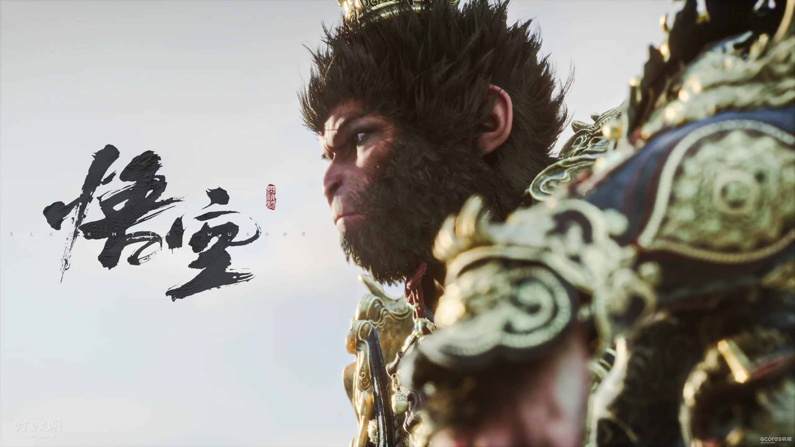
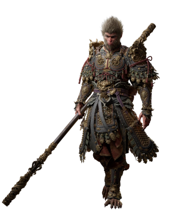
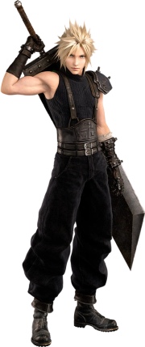
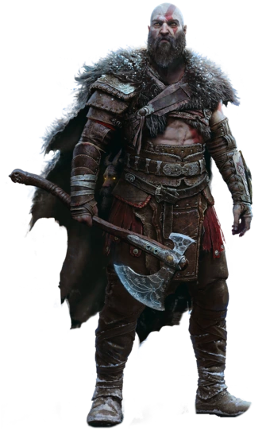
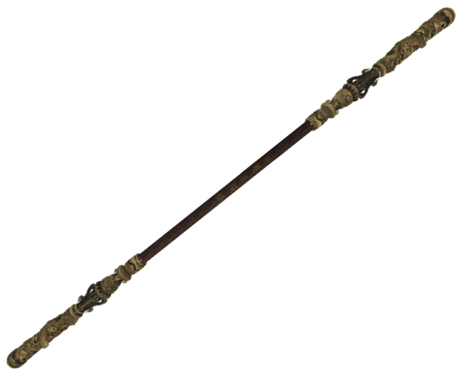
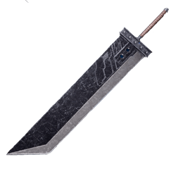
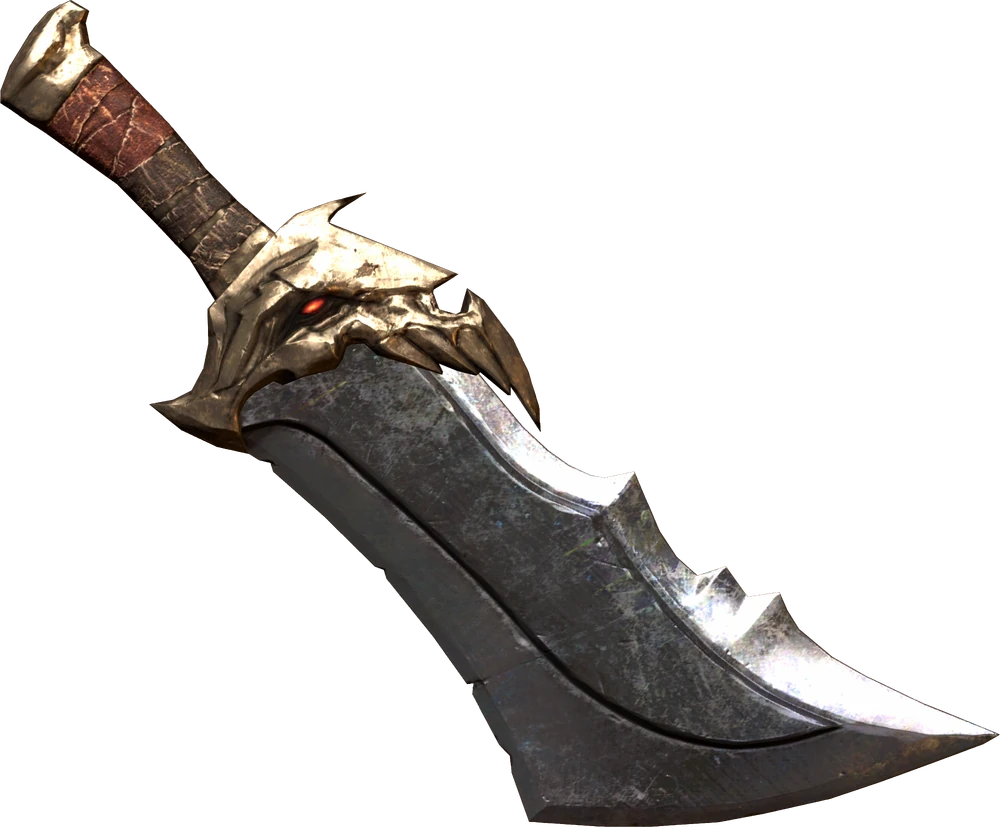

- A Clash of Cultural Storytelling in Chinese, Japanese, and Western AAA Games
Xinyi Song
In August 2024, “Black Myth: Wukong” launched worldwide, generating millions in sales for the first AAA game produced in China and sparking widespread discussion. “Black Myth” not only captivated gamers with its stunning visuals and fluid combat system, but introduced a distinct storytelling experience rooted in Chinese mythology, setting it apart from the AAA games created in Japan and the U.S., which make up most of the market. With Sun Wukong, mythical creatures, and the rich world of Chinese legends brought to life by the Game Science team, “Black Myth” offers a fresh cultural perspective to a global audience. While China has long been a dominant force in mobile and online gaming, the success of “Black Myth” is something new.. As Chinese game planner Bin Zhu puts it, “The globalization of Chinese AAA games has not truly begun yet.”

caption.
What is "AAA Game"?
A AAA (or “triple-A”) game refers to a high-budget, high-profile video game developed and published by a large, well-established studio.
These games are akin to blockbuster movies in the film industry—designed to appeal to a wide audience, with substantial investments in graphics, gameplay mechanics, story, and marketing.
In the AAA gaming market, Japan and Western countries have developed sophisticated storytelling traditions that incorporate elements of their own cultures. Japanese AAA games like “Final Fantasy” and “Elden Ring”, as well as American-made titles such as “God of War” and “Red Dead Redemption”, have each made a strong impact in the global market through their unique cultural narratives. Each country’s developers tell stories from their cultural perspectives, creating a global gaming ecosystem that, until recently, was missing a significant cultural voice—that of China.
In the following sections, I’ll explore “Black Myth: Wukong” from two angles—the protagonist and the weapon he wields—to show readers the essence of its story. At the same time, I’ll compare how the portrayal of the main character in “Black Myth: Wukong” differs from those in Japanese and Western AAA games. For this comparison, I’ll focus on “Final Fantasy VII” from Japan and “God of War: Ragnarök” from the West.
PART i. PROTAGONIST
The Desitined One, Cloud Strife, and Kratos stand as powerful embodiments of their respective cultures, each character offering players a unique perspective through the lens of myth and folklore. The Destined One, from Black Myth: Wukong, channels China’s Daoist philosophy, embodying balance, resilience, and harmony with nature, emphasizing the importance of unity over individual triumph. Conversely, Cloud Strife from Final Fantasy mirrors Japanese culture’s nuanced approach to technology and identity, grappling with isolation, destiny, and a search for self amidst societal change. In the West, Kratos from God of War personifies a deeply individualistic hero, rooted in personal vengeance and transformation; his journey is both a tribute to mythological power and a critique of the burdens it brings. Together, these characters enrich the gaming world with stories that reflect each culture’s view of heroism, struggle, and redemption.

Destined One
The “Destined One,” an anthropomorphic monkey from the fabled Mount Huaguo...

Cloud Strife
Cloud Strife is a former member of SOLDIER, now turned mercenary...

Kratos
Kratos, the Ghost of Sparta, is on a journey of redemption and transformation...
The “Destined One”, an anthropomorphic monkey from the fabled Mount Huaguo, is the protagonist of “Black Myth: Wukong”, embarking on a journey that echoes a legend as old as China itself. He is one of many young warriors chosen to undertake an arduous quest: to revive the legendary Monkey King, “Sun Wukong”. This mission is no ordinary path to glory; it is a spiritual odyssey that will take him across the lands of China, facing demons, gods, and forces that defy mortal understanding. His task is to recover the Six Senses of the Great Sage—relics of “Sun Wukong”’s essence that shattered and scattered in the wake of his defeat centuries ago.
Each relic, representing one of the Great Sage’s profound senses, is more than a piece of “Sun Wukong”; it is a fragment of his wisdom, strength, and boundless spirit, hidden away and guarded by entities both fierce and enigmatic. As the “Destined One” encounters these powerful relics, he not only grows stronger but also absorbs fragments of the ancient Monkey King’s legacy, coming closer to understanding his own place within this legendary saga.
Near the journey’s end, a revelation strikes: the “Destined One” is not just a successor to the Great Sage; he is one of the relics himself—the Mind of “Sun Wukong”. As “Sun Wukong’s” reincarnation, he embodies the potential for renewal, a new vessel to carry the Monkey King’s legacy into a world that has changed profoundly since Wukong’s time. His journey is thus one of rebirth, symbolizing the renewal of old legends in a new form, bridging the gap between ancient myth and modern heroism.
In this story, the “Destined One”’s quest to piece together ”Sun Wukong“ is also a journey of self-discovery. As he gathers the fragments, he unites with a legacy far greater than his own, becoming a living testament to the enduring spirit of Chinese mythology. Through his journey, he offers players a powerful, immersive experience, weaving ancient lore with a personal journey that transforms not just the hero, but the way we understand the Monkey King’s tale.
Through the journey of the "Destined One", "Black Myth: Wukong" brings Chinese mythology to life, merging tradition with the immersive potential of modern gaming. His quest is not just an adventure—it’s a testament to the depth and resilience of Chinese cultural heritage, where ancient legends continue to inspire and evolve. By reimagining "Sun Wukong"’s legacy in a world filled with spiritual and mythical challenges, the game invites players worldwide to experience the timeless wisdom embedded in China’s stories. The "Destined One" becomes more than a character; he is a bridge between the past and present, showing how even the oldest myths can find new resonance and meaning. This blend of myth and modernity not only honors China’s cultural roots but also reminds us of the universal appeal of stories that speak to the heart of humanity itself.
“Cloud Strife”, the protagonist of “Final Fantasy VII”, is a complex and conflicted hero. Born in the small town of Nibelheim, Cloud dreamed of joining the elite SOLDIER unit of the Shinra Corporation, inspired by his idol, the legendary warrior “Sephiroth”. However, Cloud’s journey does not lead him to become the hero he imagined. Instead, he finds himself working as a mercenary, burdened with guilt and haunted by fractured memories.
Throughout the game, Cloud’s journey is marked by an intense struggle with his own identity. His memories are fragmented, blurred by truth and illusion, and further distorted by the influence of the mysterious Jenova cells within him. This inner turmoil leads him to question who he really is, drawing players into his experience of grappling with a fragmented sense of self. This theme of identity crisis reflects a core element of Japanese cultural storytelling: how an individual seeks meaning and self-worth amidst overwhelming external forces, represented here by the corruption of Shinra Corporation and the environmental devastation it causes.
As the story unfolds, Cloud confronts long-buried memories and faces the reality of his past. Through his eventual confrontation with “Sephiroth" and acceptance of his true origins, Cloud undergoes profound growth. He learns to accept his vulnerability and find strength not in an idealized past, but in the person he has become.He comes to realize that he is neither the childhood hero he aspired to be nor the identity he previously constructed, but an ordinary person with the courage to face his fears. His journey toward self-acceptance and self-realization reveals that true heroism is not defined by the past or by an idealized destiny but by the choices he makes in the present.
"Cloud Strife" is not the typical hero; he is an introspective and often conflicted character whose journey speaks to the universal struggle of self-discovery and healing. His story asks a critical question: to what extent are we defined by our past, and can we rebuild ourselves in the face of painful truths? This theme resonates widely, as players can see in Cloud’s journey the challenge of moving beyond trauma, accepting one’s imperfections, and forging a new path. Ultimately, Cloud’s story is a tale of resilience, showing that personal strength doesn’t come from erasing or escaping the past, but from accepting and moving forward. His journey transcends the fantasy setting, offering players a narrative that mirrors real human struggles. In the face of inner conflict, Cloud shows that healing is possible—that one can find purpose, connection, and self-worth by embracing their true self, however flawed. Through this deeply personal story, "Final Fantasy VII" elevates Cloud’s experience into a powerful reflection on the human condition, making his journey one of the most memorable in gaming history.
“Kratos", the legendary protagonist of the "God of War" series, is a character shaped by wrath, redemption, and the constant pull of fate. His story begins in Greek mythology, where he is a Spartan warrior who, manipulated by Ares, tragically kills his own family. This betrayal launches Kratos on a path of vengeance against the gods, leading him to dismantle the Olympian pantheon in a fury fueled by anger and grief, becoming a tragic hero and a symbol of the devastating cost of revenge.
In the series reboot, Kratos relocates to the Norse realm, where he attempts to escape his violent past and become a father to his son, “Atreus". Here, he struggles to leave behind his old ways while guiding Atreus, finding himself drawn into Norse conflicts he hoped to avoid. The bond with his son pushes Kratos to reconsider what it means to be strong—not just as a warrior but as a father who leads with wisdom.
In "God of War: Ragnarök", Kratos faces his ultimate test as Ragnarök, the prophesied end of the world, looms. For Kratos, this is more than a battle; it’s a confrontation with destiny. In striving to protect Atreus and avoid the cycle of violence, Kratos confronts his brutal past while pursuing a peaceful future for his son, transforming from a vengeful god-slayer into a protective father seeking to rewrite his legacy.
In this latest chapter, “God of War” continues to explore themes of redemption, fate, and the struggle to change one’s nature. “Ragnarök” forces Kratos to confront his darkest fears and highest hopes, embodying a new kind of heroism—one that values forgiveness, strength of character, and the will to defy the burdens of prophecy. Through his journey, “Kratos” has become more than a god of war; he is a symbol of the power to rewrite one's destiny, making “Ragnarök” not just an end but the beginning of a legacy built on resilience, love, and transformation.
Kratos’s story embodies Western themes of individualism, redemption, and the struggle to defy one’s fate. His journey reflects a Western narrative arc where heroism is about facing inner darkness, seeking forgiveness, and ultimately reshaping one’s destiny. Through Kratos, "God of War" examines the transformative power of choice and personal responsibility, capturing the essence of a hero defined by resilience and a refusal to be bound by the past.
Part ii. Weapons

Destined One
The “Destined One,” an anthropomorphic monkey from the fabled Mount Huaguo...

Cloud Strife
Cloud Strife is a former member of SOLDIER, now turned mercenary...

Kratos
Kratos, the Ghost of Sparta, is on a journey of redemption and transformation...
Following the visual comparison, their chosen weapons offer a fascinating lens through which to understand the cultural contexts that shape each hero’s journey. "Sun Wukong" wields the Ruyi Jingu Bang, a mystical staff rooted in Chinese folklore. This weapon is not only a tool of power but also a symbol of flexibility and adaptability, mirroring Daoist values that emphasize harmony and balance. Its ability to expand and contract reflects the boundless nature of the universe and "Sun Wukong"’s connection to cosmic forces, embodying the Chinese philosophy that true strength lies in fluidity and balance.
"Cloud Strife"’s iconic Buster Sword, on the other hand, is both a personal burden and a cultural symbol within "Final Fantasy". Its massive size represents the weight of responsibility and sacrifice—a theme often present in Japanese storytelling. This sword serves as a reminder of his ties to a lost past, symbolizing the struggle of balancing individual identity with collective memory, an essential aspect of Japanese culture and post-war identity.
Meanwhile, “Kratos" wields the Blades of Chaos, a weapon forged in darkness and designed for brutal close combat. The Blades symbolize his tragic past and ongoing struggle with anger and guilt, representing Western ideals of personal redemption and inner conflict. Unlike the fluidity of "Sun Wukong"’s staff or the reverence tied to “Cloud’s" sword, “Kratos"’s weapons embody raw power and are a tool of vengeance, reflecting a Western emphasis on overcoming personal demons and the weight of past actions.
Through the journeys of “Destined One”, “Cloud Strife”, and “Kratos”, we see how video games can be more than just a source of entertainment—they are a powerful means of cultural storytelling, bringing ancient myths and modern narratives to a global audience. Each character and their weapon represents not only personal struggles but also the values, conflicts, and philosophies unique to their cultures. These heroes are not simply avatars of strength or skill; they are windows into the deeper cultural landscapes they embody, revealing how different societies understand concepts like heroism, destiny, and redemption.
In an ever-connected gaming world, these culturally resonant stories allow players to step into worlds shaped by the past yet resonant with present-day themes, encouraging cross-cultural empathy and understanding. The fusion of character, weapon, and myth in games like “Black Myth: Wukong”, "Final Fantasy", and "God of War" demonstrates the profound impact of cultural narratives on global audiences. As players journey alongside these heroes, they are not only fighting battles or solving quests but also exploring the legacies of Chinese, Japanese, and Western traditions.
In the end, these stories remind us that while each culture may offer a unique lens on heroism, all share the universal themes of growth, connection, and the quest to find meaning within and beyond oneself. In a world that grows more connected by the day, games like these bring the timeless power of mythology to the forefront, showing us that every hero’s journey, no matter where it begins, speaks to something deeply human and universal.